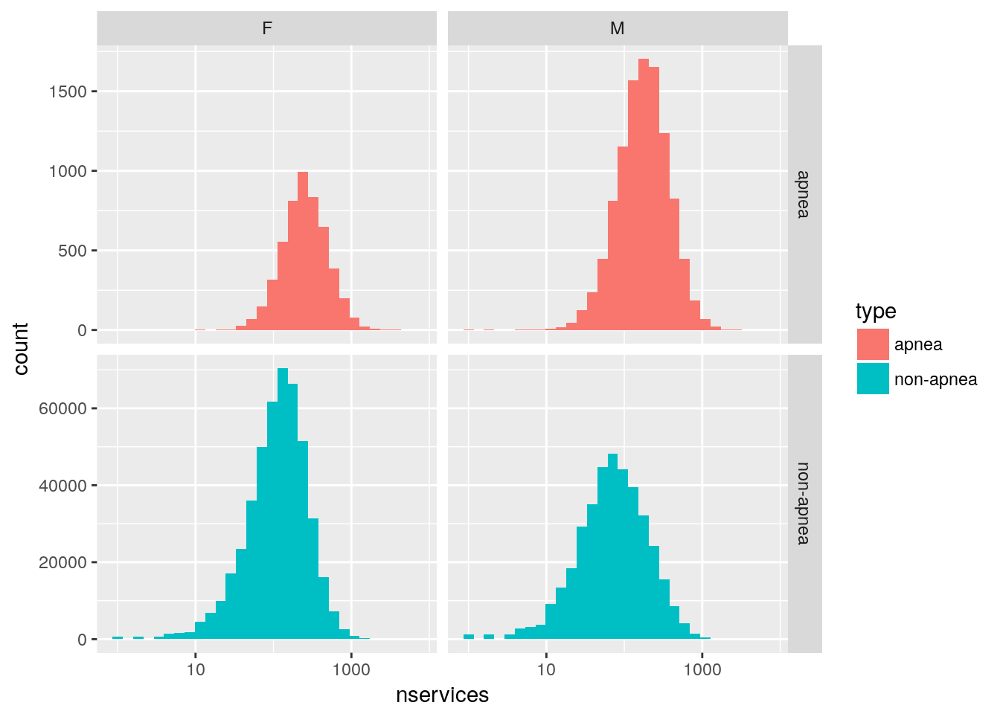
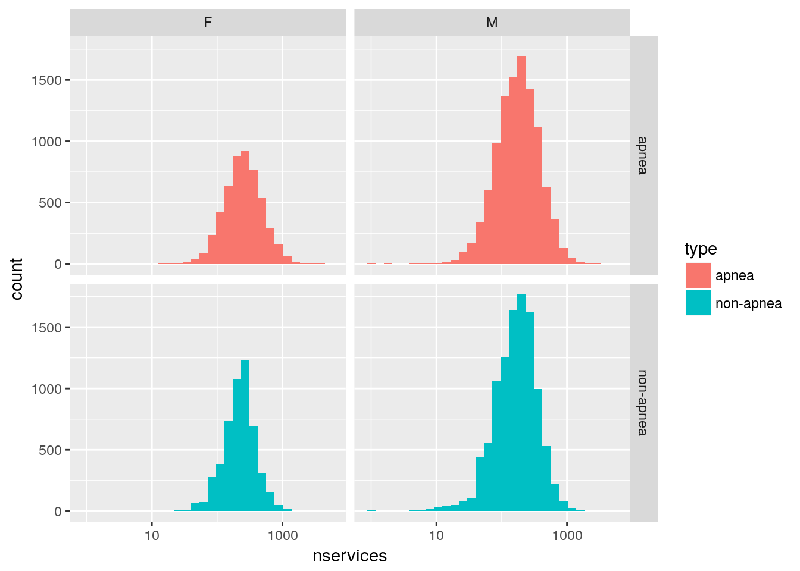

Last updated: 2018-07-16
workflowr checks: (Click a bullet for more information) ✔ R Markdown file: up-to-date
Great! Since the R Markdown file has been committed to the Git repository, you know the exact version of the code that produced these results.
✔ Environment: empty
Great job! The global environment was empty. Objects defined in the global environment can affect the analysis in your R Markdown file in unknown ways. For reproduciblity it’s best to always run the code in an empty environment.
✔ Seed:
set.seed(20180715)
The command set.seed(20180715) was run prior to running the code in the R Markdown file. Setting a seed ensures that any results that rely on randomness, e.g. subsampling or permutations, are reproducible.
✔ Session information: recorded
Great job! Recording the operating system, R version, and package versions is critical for reproducibility.
✔ Repository version: 76bc38b
wflow_publish or wflow_git_commit). workflowr only checks the R Markdown file, but you know if there are other scripts or data files that it depends on. Below is the status of the Git repository when the results were generated:
working directory clean
| File | Version | Author | Date | Message |
|---|---|---|---|---|
| Rmd | 76bc38b | Dennis Wollersheim | 2018-07-16 | wflow_publish(“analysis/createApneaSample.Rmd”) |
| html | 2f3b338 | Dennis Wollersheim | 2018-07-16 | Balanced sleep apenea |
| Rmd | c205708 | Dennis Wollersheim | 2018-07-16 | workflowr::wflow_git_commit(all = TRUE) |
| Rmd | 8b93f11 | Dennis Wollersheim | 2018-07-15 | initial commit; |
We want to investigate the sleep apnea pp, and to do this, we need to have something to compare them to. We will create a list of patients, consisting of all the sleep apnea people, and then also, people who are similiar to the sleep apnea people in age, gender, and sex, who have not had a sleep apnea test.
source('lib/functions.R')
source( "lib/get_data.R")
# -------------------------------------------------
my_db_get_query( 'select * from mbs_apnea_unique' ) %>%
mutate( type='apnea') %>%
as.tibble() %>%
{.} -> ap
my_db_get_query( 'select * from mbs_apnea_matched_sample ' ) %>%
anti_join( ap, by='pin') %>%
mutate( type='non-apnea') %>%
as.tibble() %>%
{.} -> apm
ap %>%
select( pin, sex, yob, nservices, type ) %>%
bind_rows( apm ) %>%
mutate( scat = cut_number( nservices, 5 ),
yob_group = cut_number( yob, 5 )) %>%
{.} -> apbothhow many of each type of person are there
apboth %>%
count( type )# A tibble: 2 x 2
type n
<chr> <int>
1 apnea 15673
2 non-apnea 845740Take all pp who had apnea, break them into gender, birth year
Take everyone else who had the same gender and birthyear
count the number of services for each person took over the 20 year period
note: the apnea people are generally larger service users than the non-apnea pp
apboth %>%
ggplot() +
geom_histogram( aes( nservices, fill=type)) +
scale_x_log10() +
facet_grid( type ~ sex, scales="free_y" )`stat_bin()` using `bins = 30`. Pick better value with `binwidth`. ## match apnea with non-apnea Due to this disparity, we match each apnea person with a simliar person from from the non-apnea set, who had the same number of services, and use them.
First, make sure that every apnea has a match in non-apnea. 1) get the target, and 2) make sure that the non-apnea has each of the target items
apboth %>%
filter( type=="apnea") %>%
count( sex, yob_group, scat ) %>%
rename( sample_size = n ) %>%
{ . } -> target_sample
apboth %>%
filter(type=='non-apnea') %>%
distinct( sex, yob_group, scat ) %>%
anti_join( target_sample)Joining, by = c("sex", "scat", "yob_group")# A tibble: 0 x 3
# ... with 3 variables: sex <chr>, scat <fct>, yob_group <fct>Now, make sure that there are sufficient non-apnea to match all apnea
apboth %>%
filter(type=='non-apnea') %>%
count( sex, yob_group, scat ) %>%
rename( n_non = n ) %>%
inner_join( target_sample) %>%
mutate( diff = n_non - sample_size ) %>%
filter( diff < 0 )Joining, by = c("sex", "yob_group", "scat")# A tibble: 0 x 6
# ... with 6 variables: sex <chr>, yob_group <fct>, scat <fct>,
# n_non <int>, sample_size <int>, diff <int>Now, extract matching non-apnea
apboth %>%
filter(type=='non-apnea') %>%
nest( -sex, -yob_group, -scat ) %>%
inner_join( target_sample) %>%
mutate( sample = map2( data, sample_size , sample_n )) %>%
unnest(sample) %>%
bind_rows( ap ) %>%
{ . } -> ap_balancedJoining, by = c("sex", "scat", "yob_group")ap_balanced# A tibble: 31,346 x 13
sex scat yob_group sample_size pin yob nservices type item
<chr> <fct> <fct> <int> <chr> <int> <dbl> <chr> <chr>
1 F (125,… (1.95e+03,… 342 03565… 1957 137 non-… <NA>
2 F (125,… (1.95e+03,… 342 06619… 1954 199 non-… <NA>
3 F (125,… (1.95e+03,… 342 02009… 1953 191 non-… <NA>
4 F (125,… (1.95e+03,… 342 04025… 1956 172 non-… <NA>
5 F (125,… (1.95e+03,… 342 02754… 1961 162 non-… <NA>
6 F (125,… (1.95e+03,… 342 08197… 1953 153 non-… <NA>
7 F (125,… (1.95e+03,… 342 07638… 1955 193 non-… <NA>
8 F (125,… (1.95e+03,… 342 03698… 1963 165 non-… <NA>
9 F (125,… (1.95e+03,… 342 02977… 1963 128 non-… <NA>
10 F (125,… (1.95e+03,… 342 00363… 1955 151 non-… <NA>
# ... with 31,336 more rows, and 4 more variables: first_service <date>,
# last_service <date>, ndays <int>, ntests <dbl> samplefunction (x, size, replace = FALSE, prob = NULL)
{
if (length(x) == 1L && is.numeric(x) && is.finite(x) && x >=
1) {
if (missing(size))
size <- x
sample.int(x, size, replace, prob)
}
else {
if (missing(size))
size <- length(x)
x[sample.int(length(x), size, replace, prob)]
}
}
<bytecode: 0x55c8c7d7e338>
<environment: namespace:base>ap_balanced %>%
ggplot() +
geom_histogram( aes( nservices, fill=type)) +
scale_x_log10() +
facet_grid( type ~ sex)`stat_bin()` using `bins = 30`. Pick better value with `binwidth`.
ap_balanced %>% write.csv("output/ap_balanced.csv")sessionInfo()R version 3.4.2 (2017-09-28)
Platform: x86_64-pc-linux-gnu (64-bit)
Running under: Ubuntu 17.10
Matrix products: default
BLAS: /usr/lib/x86_64-linux-gnu/openblas/libblas.so.3
LAPACK: /usr/lib/x86_64-linux-gnu/libopenblasp-r0.2.20.so
locale:
[1] LC_CTYPE=en_AU.UTF-8 LC_NUMERIC=C
[3] LC_TIME=en_AU.UTF-8 LC_COLLATE=en_AU.UTF-8
[5] LC_MONETARY=en_AU.UTF-8 LC_MESSAGES=en_AU.UTF-8
[7] LC_PAPER=en_AU.UTF-8 LC_NAME=C
[9] LC_ADDRESS=C LC_TELEPHONE=C
[11] LC_MEASUREMENT=en_AU.UTF-8 LC_IDENTIFICATION=C
attached base packages:
[1] grid stats graphics grDevices utils datasets methods
[8] base
other attached packages:
[1] bindrcpp_0.2.2 keyring_1.0.0 RPostgreSQL_0.6-2
[4] DBI_0.8 forcats_0.3.0 dplyr_0.7.6
[7] purrr_0.2.5 readr_1.1.1 tidyr_0.8.1
[10] tibble_1.4.2 ggplot2_2.2.1 tidyverse_1.2.1
[13] shiny_1.1.0 DataCache_0.9 ordinal_2018.4-19
[16] foreign_0.8-69 readstata13_0.9.0 tmaptools_1.2-4
[19] tmap_1.11-2 lubridate_1.7.4 pander_0.6.1
[22] kableExtra_0.8.0 knitr_1.20 broom_0.4.4
[25] stringr_1.3.1 magrittr_1.5 seas_0.4-3
[28] data.table_1.11.4 wrapr_1.4.0 nvimcom_0.9-72
loaded via a namespace (and not attached):
[1] readxl_1.0.0 backports_1.1.2 osmar_1.1-7
[4] workflowr_1.1.1 plyr_1.8.4 lazyeval_0.2.1
[7] sp_1.3-1 splines_3.4.2 crosstalk_1.0.0
[10] leaflet_2.0.1 geojsonlint_0.2.0 digest_0.6.15
[13] foreach_1.4.4 htmltools_0.3.6 gdata_2.18.0
[16] modelr_0.1.1 gmodels_2.16.2 R.utils_2.6.0
[19] colorspace_1.3-2 rvest_0.3.2 jsonvalidate_1.0.0
[22] haven_1.1.1 rgdal_1.3-2 crayon_1.3.4
[25] RCurl_1.95-4.8 jsonlite_1.5 bindr_0.1.1
[28] iterators_1.0.9 glue_1.2.0 gtable_0.2.0
[31] webshot_0.5.0 V8_1.5 scales_0.5.0
[34] Rcpp_0.12.17 viridisLite_0.3.0 xtable_1.8-2
[37] spData_0.2.8.3 units_0.5-1 spdep_0.7-7
[40] stats4_3.4.2 htmlwidgets_1.2 httr_1.3.1
[43] RColorBrewer_1.1-2 geosphere_1.5-7 pkgconfig_2.0.1
[46] XML_3.98-1.11 R.methodsS3_1.7.1 deldir_0.1-15
[49] utf8_1.1.4 labeling_0.3 tidyselect_0.2.4
[52] rlang_0.2.1 reshape2_1.4.3 later_0.7.3
[55] munsell_0.4.3 cellranger_1.1.0 tools_3.4.2
[58] cli_1.0.0 evaluate_0.10.1 yaml_2.1.19
[61] satellite_1.0.1 nlme_3.1-131 whisker_0.3-2
[64] mime_0.5 R.oo_1.22.0 xml2_1.1.1
[67] rmapshaper_0.4.0 compiler_3.4.2 rstudioapi_0.7
[70] curl_3.0 png_0.1-7 e1071_1.6-8
[73] stringi_1.2.3 rgeos_0.3-26 lattice_0.20-35
[76] Matrix_1.2-14 classInt_0.2-3 psych_1.8.3.3
[79] pillar_1.2.3 LearnBayes_2.15.1 ucminf_1.1-4
[82] bitops_1.0-6 raster_2.6-7 mapview_2.4.0
[85] httpuv_1.4.4.2 R6_2.2.2 promises_1.0.1
[88] KernSmooth_2.23-15 codetools_0.2-15 gdalUtils_2.0.1.14
[91] dichromat_2.0-0 boot_1.3-20 MASS_7.3-47
[94] gtools_3.5.0 assertthat_0.2.0 openssl_1.0.1
[97] rprojroot_1.3-2 mnormt_1.5-5 expm_0.999-2
[100] parallel_3.4.2 hms_0.4.2 udunits2_0.13
[103] coda_0.19-1 class_7.3-14 rmarkdown_1.10
[106] git2r_0.21.0 getPass_0.2-2 sf_0.6-2
[109] base64enc_0.1-3 This reproducible R Markdown analysis was created with workflowr 1.1.1